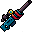
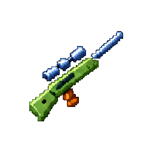

#14 · weapon_14MegabonkSniper RifleНаша иконкаLongwatchДальний дозорЭффект оригинала в MegabonkДальний точный выстрел пробивает врагов.ИсточникНаш PNG · 14Связь по ID · JSONОсновной — актуальный · weapons-current64 px32 px